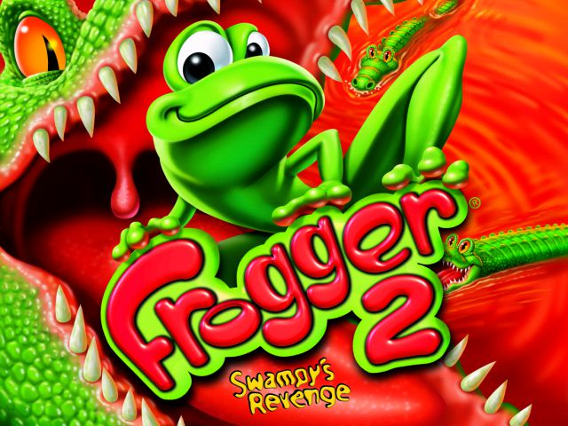
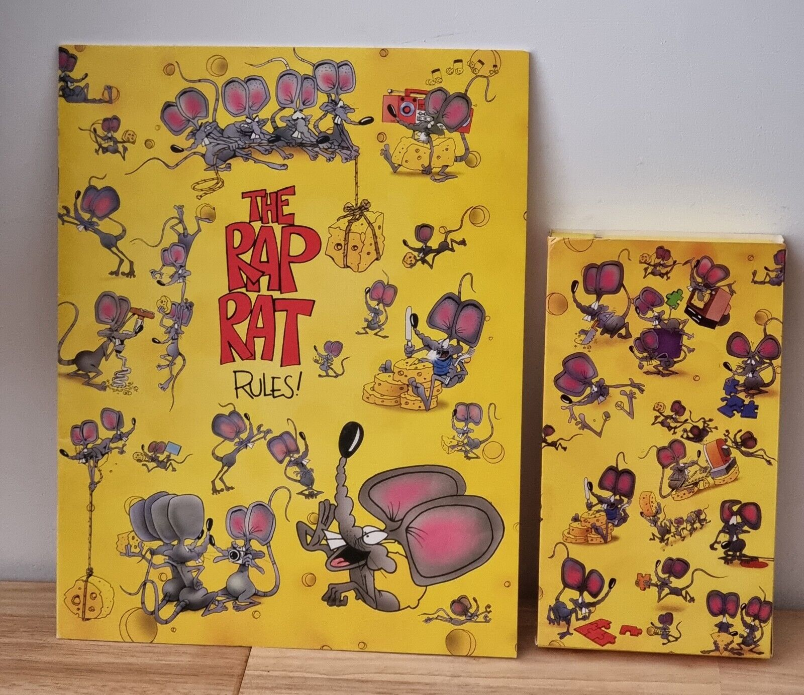

Gaming of Every Description
Gaming is another form of entertainment. However, it has many more formats and has lasted way longer than films or television, having existed since the dawn of time. Games like "capture the flag" and "Duck-Duck Goose" have satisfied the social needs of many generations, and will continue to do so long after.
For more information on these types of entertainment, visit:
The GameStop website.  